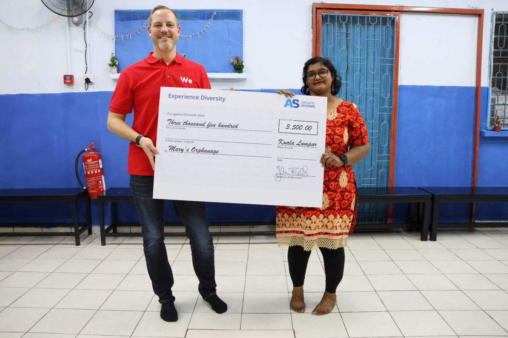
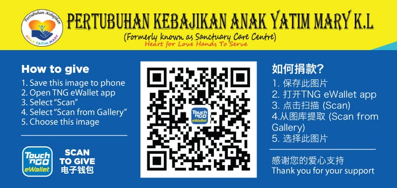

Bank Transfer
Donations may be made directly via online banking transfer to the home's registered welfare account. Please email us for the latest account details.
Every contribution helps us provide food, education and shelter

Rumah Kasih Mary relies entirely on the generosity of the public, corporate sponsors and well-wishers to keep the home running. There are no fixed government subsidies covering our daily costs, so every ringgit donated goes directly towards the children's wellbeing.
Choose an area that is close to your heart
| Cause | Description | Estimated Monthly Need (MYR) |
|---|---|---|
| Rent | Contributes towards the monthly cost of the home's current premises. | 5,000 |
| Tuition Fees | Supplements the children's education and school-related expenses. | 2,250 |
| Wet Market Supplies | Purchases fresh meat and vegetables for the children's meals. | 5,000 |
| Groceries | Covers dry food items and pantry essentials for the home. | 7,500 |
| Water Bill | Maintains a consistent, clean water supply for daily use. | 700 |
| Cleaning Supplies | Keeps the home clean, hygienic and safe for all the children. | 5,000 |
Choose whichever method is most convenient for you
Donations may be made directly via online banking transfer to the home's registered welfare account. Please email us for the latest account details.
You are welcome to hand-deliver cash or a cheque directly to the home at our Setapak address during visiting hours.
Groceries, school supplies, clothing and hygiene items are gratefully accepted. Please contact us beforehand to check current needs.
Companies may sponsor a specific cause, such as tuition fees or a festive celebration, as part of their CSR programme.
Your generosity helps us provide a safe home, quality education, and a brighter future for the children of Rumah Anak Yatim Mary. Whether it's a one-time gift or a monthly contribution, every ringgit goes directly toward their food, shelter, education, and wellbeing.
No amount is too small but together, we can give these children the love, care, and hope they deserve. Make a difference today. Donate now and be part of their journey.
Donate Now
Fill in the form below and our team will get in touch with you